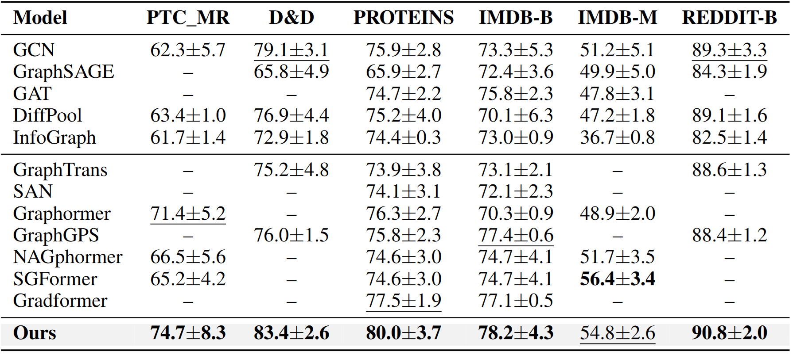
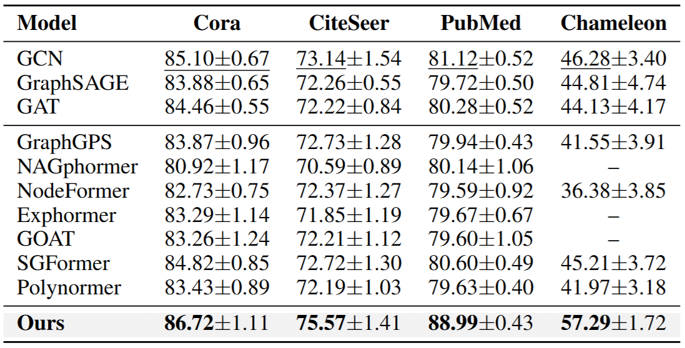
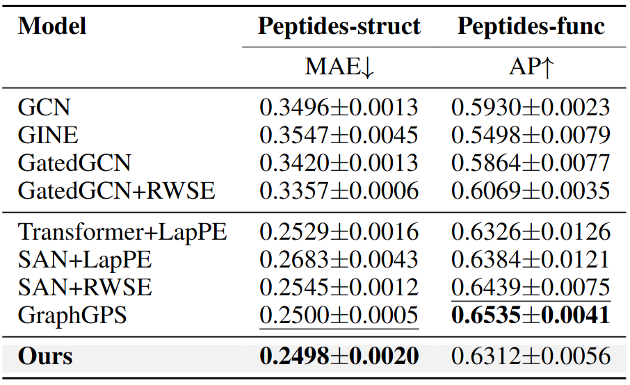

|
Adaptive Fusion of Global-to-Local Patterns for Graph Representation Learning 
입력 그래프 \(G=(\mathcal{V},\mathcal{E},X)\)가 주어지면 노드 특성은 초기 표현 \(h(0)\)로 인코딩된다. 연속적 모델링을 통해 \(h(0)\)을 \(h(T)\)로 변화시키기 위해 Neural ODE를 사용한다. \(\mathcal{L}_{LG}\)는 전역 표현과 일치되도록 \(h(0)\)를 규제한다. 그 뒤, 어탠션 메커니즘을 활용하여 두 표현 \(h(0)\)과 \(h(T)\)를 적응적으로 융합한다. 융합된 표현은 FC Layer를 거쳐 최종 예측 \(\hat{y}\)를 출력한다. |
요약그래프 신경망(Graph Neural Networks, GNNs)은 메시지 패싱(messagepassing)을 통해 지역 구조(local structures)를 효과적으로 모델링하며 다양한 그래프 기반 문제에서 우수한 성능을 보여왔다. 그러나 이러한 접근방법은 본질적으로 지역적인 집계 방식에 의존하기 때문에 장거리 의존성(long-range dependency)을 포착하는 데에는 한계가 있다. 이를 극복하기 위해 최근에는 전역 어텐션(global attention) 메커니즘을 도입한 Transformer 기반 GNN들이 제안되었으며, 이들은 멀리 떨어진 노드 간의 직접적인 상호작용을 가능하게 하여 전역 문맥(global context)에 대한 포착능력을 향상시킨다. 그러나 이러한 모델들은 전역 정보와 지역 정보를 독립적인 요소로 취급하는 경향이 있어, 양자의 통합에 대한 근본적인 원리를 결여하고 있다. 본 연구에서는 전역 구조가 지역 패턴의 해석을 안내하는 계층적(hierarchical) 모델링 접근이 효과적인 그래프 이해에 필수적이라고 주장하며, 이를 구현하기 위한 새로운 GNN 아키텍처를 제안한다. 제안하는 모델은 먼저 그래프 확산(graph diffusion)을 통해 전역정보를 모델링하고, 이를 바탕으로 그래프 반응(graph reaction)을 통해지역 정보를 유도하여 노드 표현을 계층적으로 학습한다. 마지막으로, 그래프의 위상(topology)과 작업(task) 특성에 따라 전역 및 지역 신호를적응적으로 통합하는 융합 메커니즘을 도입한다. 모델의 성능은 분자구조, 생물정보학, 사회 네트워크 등 다양한 도메인의 그래프 분류 데이터셋 6종, 장거리 의존성을 갖는 그래프 벤치마크 2종, 노드 분류 데이터셋 4종에 대해 검증하였으며. 실험 결과, 메시지 패싱 기반 및 Transformer 기반 GNN들과 비교하여 최대 11.01%p의 성능 향상을 달성하였으며, 추가적인 ablation 실험, 민감도 분석, 사례 연구 등을 통해 제안한 전역-지역 통합 설계의 표현력 향상 효과를 확인하였다. |
결과



설명 |
결과설명 |